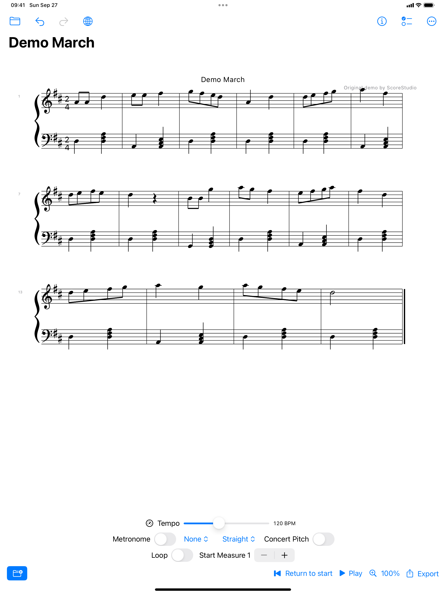
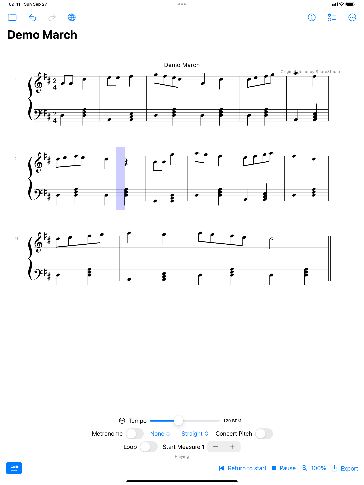
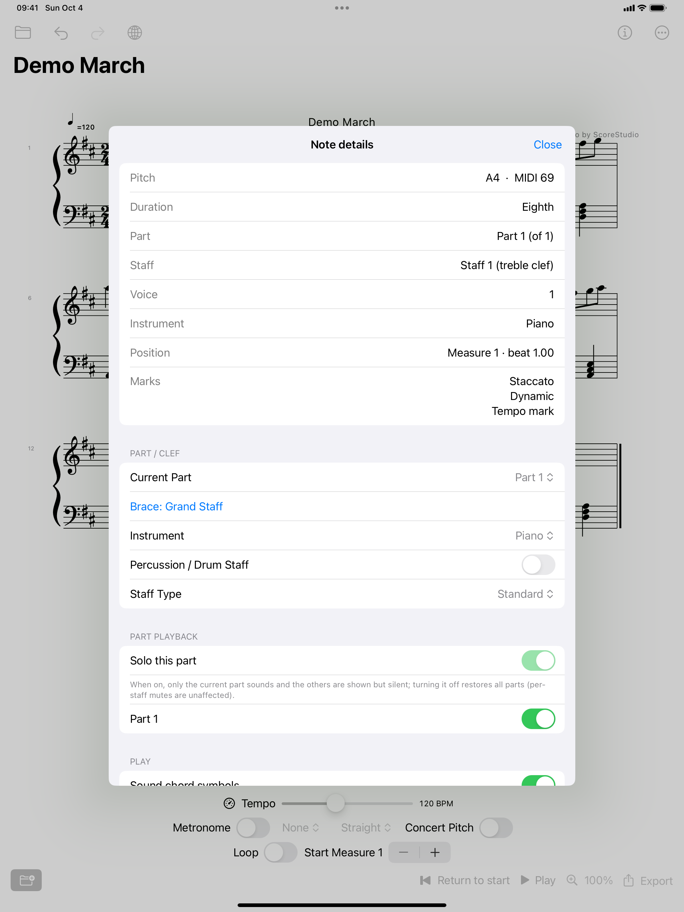
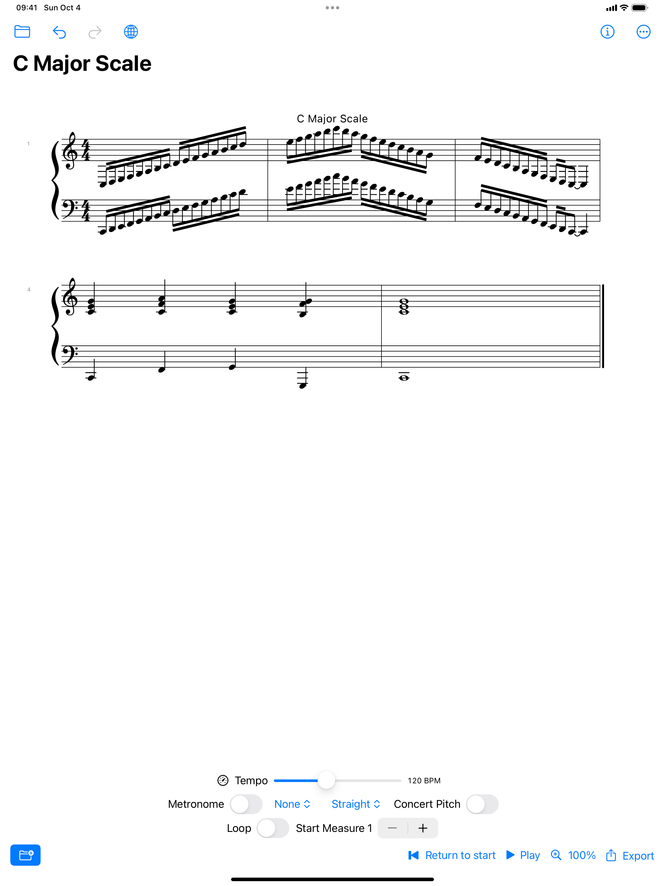

ScoreStudio
Sheet music for iPhone and iPad: read it, hear it, practise it. Completely offline.
No account · No network access · No permissions requested · No data collected




What it does
- Open and read: all three MusicXML formats (
.xml,.musicxml, compressed.mxl), plus vector PDFs exported by notation software (experimental) - Real engraving: the Bravura music font draws beams, slurs, ornaments, chord symbols, repeats and multi-voice rests to engraving conventions
- Sound out of the box: a bundled GM sound bank performs dynamics, pedals, staccato, fermatas, trills / turns / mordents and grace notes. Chord symbols play along underneath, with their own volume
- Transposing instruments made clear: on a B♭ trumpet or sax part the app labels the sounding pitch (“written B4 — sounds as A4”) and warns after import if the written score is a whole tone off
- Handy transport: return to start, play / pause / resume; select a note first and playback starts there
- Read-only note details: pitch, duration, voice and staff, position, articulations, dynamics, lyrics and chord symbols
- Repeats done properly: repeat barlines, voltas, D.C. / D.S. al Fine and To Coda
- Practise: scales, arpeggios and chords in C / F / G major and their relative minors (up / down, 1–3 octaves, optional cadence), plus metronome, tempo, loop, swing and a piano roll
Why ScoreStudio
- Completely offline: no account, no ads, no analytics — your data never leaves the device
- Free, with no in-app purchases or subscriptions
- Chinese and English interface
Links
- Support & FAQ
- Privacy Policy
- Friendly link: openscores — public-domain score library (an independent open-source project)
- 中文：产品页 · 支持 · 隐私政策